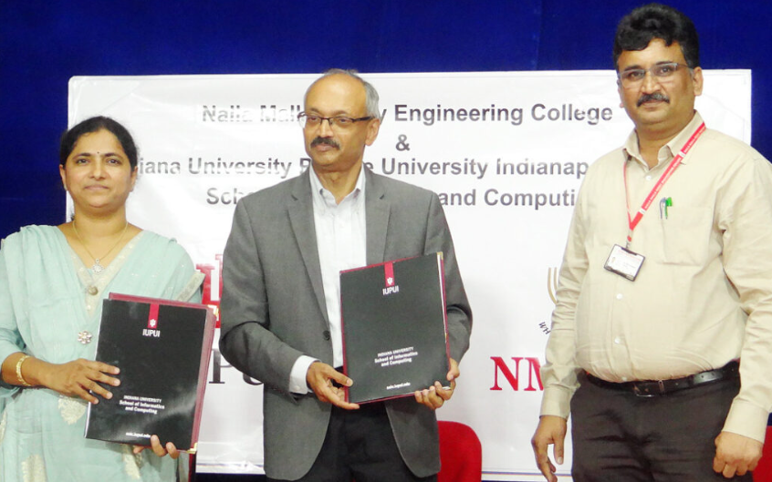

Internationalisation
NMREC is actively involved in internationalisation through collaborations for Projects and
academic activities with International Universities, and also to internationalise the
teaching-learning process. The college set up an International Office which provides
international exposure to the students and faculty of NMREC.
Internationalisation at NMREC involves the following activities:
- International Office in college for Training, Counselling, and support for Higher Education Abroad
- Collaboration with International Universities for student admissions, Student Exchange Programs, International Internships, and Student Projects
- International Experts Mentoring our Students
- Regular Faculty trainings by International Experts
- Faculty Certified by International Federation of Engineering Education Societies (IFEES) and IGIP (International Society for Engineering Pedagogy)
International Project Funding
Nalla Malla Reddy Engineering College committed to fostering global innovation and research by providing students and faculty with opportunities to secure international funding for their projects. Our initiative connects academic talent with funding agencies, international collaborations, and grant opportunities to support ground-breaking research and development across various disciplines. Whether the students working on cutting-edge technology, social sciences, or sustainable development, we aim to empower our community to contribute globally through well-supported, impactful projects. Explore the resources and guidance available to turn the student’s ideas into globally recognized achievements.
ERASMUS+ FUNDED PROJECT – AIDEDU
- International Office in college for Training, Counselling, and support for Higher Education Abroad
- Collaboration with International Universities for student admissions, Student Exchange Programs, International Internships, and Student Projects
- International Experts Mentoring our Students
- Regular Faculty trainings by International Experts
- Faculty Certified by International Federation of Engineering Education Societies (IFEES) and IGIP (International Society for Engineering Pedagogy)
- AIDEdu is an Erasmus+ project aimed at establishing a Teaching and Learning Centre of Excellence for inclusive and digitized management education in India and Nepal.
- The project promotes equity and quality education using e-learning technologies.
- NMREC student Mr. R. Harish won the project’s logo design competition, receiving a Rs.10,000/- cash prize.
- Kickoff meeting hosted in Nepal by Kathmandu University and Global College of Management, attended by Dr. Divya Nalla and Dr. Sneha Nalla.
- More details at AIDEdu.

InterNepInd
Nalla Malla Reddy Engineering College is a partner institute in the European Union funded ERASMUS + KA2 Project (project ID 610303) (from 2019-2022), ‘A step forward in the Internationalization of Higher Education Institutions in Nepal and India / InterNepInd’, which is a project focused on supporting Internationalisation of Higher Educational Institutions in India to improve quality of higher education and to promote regional and international cooperation.
As part of the project, the Strategic Internationalisation Plan (SIP) of Nalla Malla Reddy Engineering College has been designed to systematically develop internationalisation of the institution.


Collaborations with International Universities
NMREC MoU Exchange with IUPUI University, USA
NMREC, Hyderabad, has signed an MoU with IUPUI, USA, offering students a chance to earn international BA and MA degrees. This partnership, enabled by NMREC's autonomous curricular reforms, allows students to pursue 2+2 and accelerated master's programs at IUPUI. The agreement provides pathways for students to complete part of their B.Tech at NMREC and the remainder at IUPUI, earning degrees from Purdue University or Indiana University. Dr. Mathew Palakal from IUPUI highlighted research opportunities and MS programs in fields like Human-Computer Interaction, Bioinformatics, and Applied Data Science. This initiative opens global education avenues for Telangana students.


MOU With Rider University
NMREC signed an MOU with Rider University, NJ, USA to work together to develop institutional and educational linkages between the two institutions. Undergraduate students of NMREC are eligible for a 2+2 program with the first two years at NMREC and the next two years at Riders.


MOU with University of Memphis
NMREC signed MOU with The Herff College of Engineering, University of Memphis (UofM), Tennessee, USA, for accelerated Masters programs at UofM leading to MS in Mechanical Engineering (MSME), MS in Electrical and Computer Engineering (MSECE), MS in Civil Engineering (MSCE). This MOU provides opportunity for the students in their final semester of engineering at NMREC to start their MS program at University of Memphis during their final semester in B.Tech. Prof. David Russomano, Vice Provost of University of Memphis, was instrumental in signing of the MOU between University of Memphis and Nalla Malla Reddy Engineering College

International Office
The International Office has been established in the college as a result of the institution's participation in the project "InterNepInd: A Step forward in Internationalisation of Higher Education Institutions in India and Nepal", co-funded by the the European Union.
Nalla Malla Reddy Engineering College thanks the support of the Erasmus+ Programme of the European Commission for funding the International office through the InterNepInd project.
Indiana University Purdue University Indianapolis (IUPUI), USA

Hi, I am Shresta Reddy Nukala, I have done my BTech in Computer Science and Engineering at Nalla Malla Reddy Engineering College. I am currently pursuing my Masters in Applied Data Science at Indiana University Purdue University Indianapolis (IUPUI), USA, through the 3.5+1.5 Accelerated Masters program through MOU of Nalla Malla Reddy Engineering College with IUPUI. My experience studying at IUPUI has really been fascinating with the world class education and top notch professors meeting current industry standards. I would say the exposure to various advanced technologies has enabled me to witness how the world is changing on the technology front. Interacting with people from different backgrounds led me to understand different cultures. This experience is really worth it and helped me learn new technologies and techniques at the very beginning of my career.The MOU of our college with IUPUI has enabled me to embark on this exciting journey enabling me to complete my B.Tech and masters degree in 5 years of time
Hi, Shriya Thumma, Embarking on a journey towards mastering the realms of applied data science, I found my academic haven at Indiana University-Purdue University Indianapolis (IUPUI). Amidst the vibrant cityscape of Indianapolis, IUPUI stands tall as a beacon of educational excellence, offering a myriad of opportunities across diverse disciplines. My path towards a master’s degree was paved through the innovative 3.5 + 1.5 accelerated masters program at NMREC, where I diligently completed my B.Tech credits in record time, setting the stage for my advanced studies.At IUPUI, the fusion of theoretical knowledge with practical application is the cornerstone of education. Through immersive teaching methodologies, complex concepts in AI and ML were demystified, fostering a deeper understanding and honing practical skills crucial for real-world challenges.Thanks to my college NMREC for this unique opportunity.


As a final-year Computer Science and Engineering student at Nalla Malla Reddy Engineering College, Hyderabad, my academic journey took an exciting turn when I participated in the fully funded Erasmus+ Student Mobility Program at the University of Cordoba, Spain. This collaboration between NMREC and UCO provided me with invaluable academic and cultural exposure. At the Rabanales campus, I was welcomed into a vibrant, diverse community. Despite Spanish being the predominant language, my courses in Metaheuristic, Legislation and Standardization, and a Bachelor Thesis on Automatic Machine Learning Workflow Composition with PonyGE2 were conducted in English. The professors' friendly approach ensured a smooth learning experience. Beyond academics, I explored Spain’s rich heritage and built friendships with peers from around the world. While the language barrier posed a challenge, it also motivated me to embrace a new culture. As I look forward to earning my certificate from UCO, I recognize how this experience has broadened my perspective and enriched both my personal and academic growth. Programs like Erasmus+ truly foster cross-cultural understanding, and I am grateful to NMREC for making this opportunity possible.
Internship at IIT Hyderabad

I, K. Radha Rani Neha, a final-year CSE student specializing in AI & ML at NMREC, secured a 6-month research internship at IIT Hyderabad under Prof. Antony Franklin. The selection process included academic evaluation, a technical test at Swecha Hyderabad, and a rigorous interview assessing problem-solving and communication skills. Out of 50 candidates, I successfully secured the offer on January 2nd. Grateful to NMREC, Swecha, IIT Hyderabad, and my mentor, I look forward to contributing to this research and enhancing my skills.
Collaborations with International Associations
Nalla Malla Reddy Engineering College is a Consortium member of the Indo Universal Collaboration for Engineering Education (IUCEE).
IUCEE -Indo Universal Collaboration for Engineering Education
IAs part of the membership the faculty and students of the college benefit enormously in Teaching- Learning, Entrepreneurship development, clean and green campus initiatives, Engineering Projects in Community Service (EPICS), Sustainable Development, Online Teaching, International Engineering Educator Certification Programs, Virtual Labs, and many others Faculty of the college participated in international trainings and workshops, collaborate with international experts and involve in research in engineering education as part of IUCEE activities. Students of NMREC got opportunity to participate in Student leadership programs, courses on Entrepreneurship, Clean and Green Campus, Artificial Intelligence, Soft Skills, Cyber Hygiene using Virtual Labs conducted by International experts through IUCEE.


International Office
The International Office has been established in the college as a result of the institution's participation in the project "InterNepInd: A Step forward in Internationalisation of Higher Education Institutions in India and Nepal", co-funded by the the European Union.
Nalla Malla Reddy Engineering College thanks the support of the Erasmus+ Programme of the European Commission for funding the International office through the InterNepInd project.